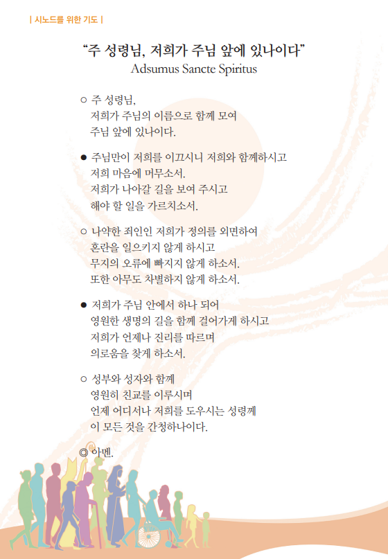
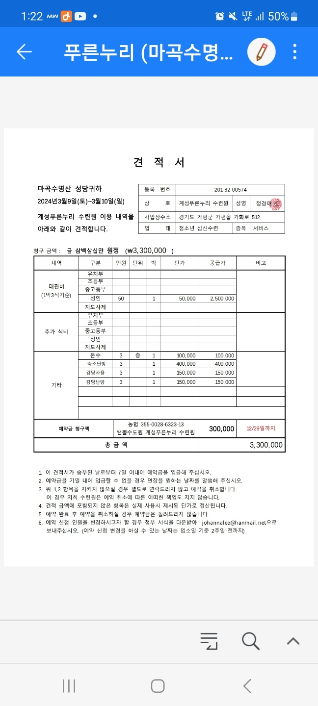

2024년 2월 사목협의회 진행 순서
시작 기도(시노드를 위한 기도 Adsumus Sancte Spiritus)

1. 신부님 전달사항
2. 마곡수명산성당카페 Open 점검
홍보분과
3. 2월 19일(월) ~ 22일(목) 복사단 해외캠프
청소년분과
4. 3월 9일(토) ~ 10일(일) 전신자 피정
교육분과, 신심분과

버스 견적 : 인당 3만 원 예상 ※부가세 별도
마침기도
영광송